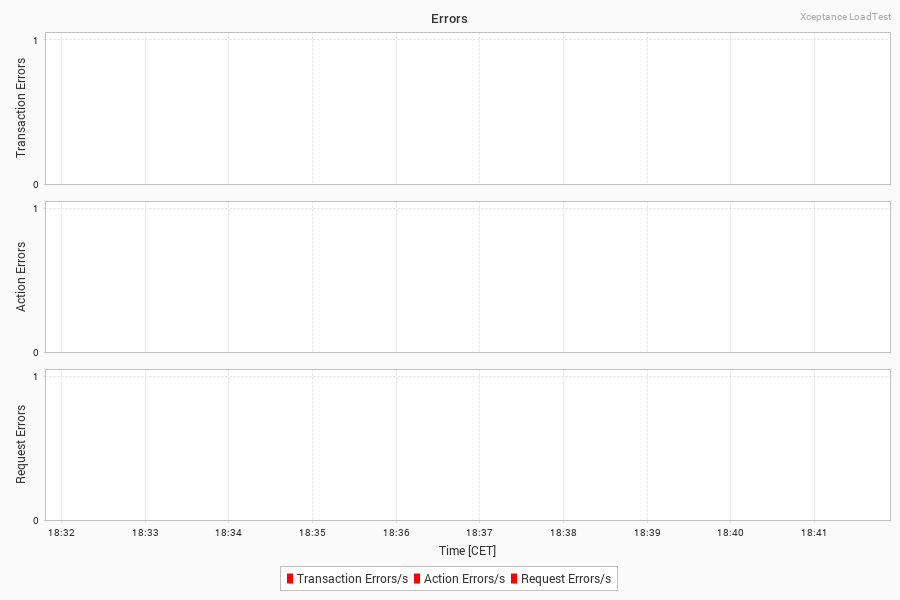

Performance Test Report
Errors
This section lists all errors that occurred during the load test. The data listed here helps you identify application errors or test problems. More...Hide...
Errors are hard failures in the flow of testing. They stop the current execution of the test case (or transaction), log an error, and eventually move on to the next test execution if scheduled to do so.
Errors can occur on transaction, action, or request level. Errors on the request level are counted on action level as well. Action level errors are also counted as transaction errors. A connection reset, for instance, counts as request error and causes the action to fail (counted). As a result, the transaction fails as well which again is counted and logged.
The Overview section below lists the error message and the count. It ignores the stack trace to sum up common problems without relating them to the test case. The Details section beneath lists the full stack trace next to the test case and the directory in which you can find the data dump for further analysis.

Request Errors
This section displays the request errors grouped by response code. More...Hide...
The chart creation can be configured by setting the corresponding report generator properties. (See reportgenerator.properties file for more details)
No such data has been collected.
Transaction Error Overview
| Error Message | Count | Percentage |
|---|---|---|
| No data available | ||
More...Hide...
The chart limit can be set or disabled by setting the corresponding report generator properties. (See reportgenerator.properties file for more details)
No such data has been collected.
Transaction Error Details
More...Hide...
The chart limit can be set or disabled by setting the corresponding report generator properties. (See reportgenerator.properties file for more details)
| Count | Test Case | Action | Directory | Error Information |
|---|---|---|---|---|
| No data available | ||||